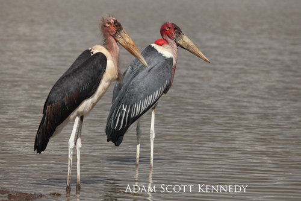

Dear All,
NAIROBI NATIONAL PARK 26th May 2014
….and so it was now 5.40pm and we were hurrying towards the Langata
Gate to be checked out by 6.00pm. A quick check of the small Langata
Forest Dam not far from the gate rewarded us with a very nice
Madagascar Pond Heron, and an extremely attractive breeding plumaged
extravert Lesser Moorhen. Leaving here although now only one and a
half kilometres for the gate we stopped at the small bridge over the
Mokoyeti River, and there peering at us from under the cover of the
overhanging vegetation was a sub-adult Black Stork (it’s 26th
May!!!!), and within another minute we were on time exiting Langata
Gate.
That is how our day in Nairobi National Park finished with a bang, but
now back to the start…..
It had been dry the past few days and the rains have so far let us
down rather badly, but the traffic along Magadi Road and on to Langata
Road was rather light, and we managed to get from my house to the Main
Entrance of Nairobi National Park in less than ten minutes.
Here Adam Kennedy, Karen Plumbe kindly acting as the days chauffeur
and myself met up with Jennifer Oduori, and we were processed through
the gate by 6.50am.
Being a dull day, we could not build up the enthusiasm to visit the
KWS Mess gardens which of late have not been too rewarding, and so
opted for Ivory Burning Site complete with new incredibly hideous
monument designed by people with no knowledge of art or beauty. If you
find this comment a little harsh, then I suggest you pay a personal
visit to this new addition. Birdwise, nothing happening at all, so we
boarded for Nagalomon Dam, with a Spotted Thick-knee in the drift, and
another two on the waters edge. There was a young Jacobin Cuckoo along
the causeway, on the “island” were many Long-tailed Cormorants with a
young Great, and a male Darter. Just one Black-crowned Night-Heron was
in the trees.
Leaving here we set off on the back road to Hyena Dam (which now
doesn’t get there because of the new swamp), it was quiet on the road
with a Slender Mongoose running along ahead of us and the first of so
many Sunis today, an African Firefinch was in full voice, a pair of
Brown Parrots were in the fig, and a Laughing Dove was unusual in this
part of the Park. The new swamp was not the same with no palearctic
waders seen all day, African Water Rails called from concealment,
there were two Yellow-billed Ducks and eight Red-billed Teal and that
was it. We retraced our route back and headed to Hyena Dam. Four
Egyptian Mongooses were playing in the road shortly before the dam,
however they were all adult sized, and two lionesses were in the
grass.
It was quiet at Hyena Dam, not the hive of activity we had been used
to in the past few months. There were a number of Plain Martins
feeding over the water, and a late Barn Swallow joined them and six
Banded Martins also came in for a brief period. Water Rails were
calling from the typha but stayed in cover. Following the creek we
found the small Great Egret, and were delighted to see that the pair
of Long-toed Plovers are still present.
Now heading out to Karen Primary School Dam we had a young
white-headed Martial Eagle on the run-off, the first of six
Black-shouldered Kites, and the first of six Secretarybirds. In the
grass were many Cisticolas, a Red-faced sang along the Mokoyeti and
there were a few Orange-breasted Waxbills. Just beyond Lone Tree a
very late Black Stork was seen flying in the distance, it seemed to
have a black neck. The bird in the evening near Langata Gate had a
buff head and upper neck and did not look the same individual but to
have two Black Storks in the Park at this time of year would be to say
the least extraordinary (just one is!).
Karen Primary School Dam still had the large young Spur-winged Goose,
and Eland Hollow held on to its African Jacana, and the usual Hippo.
Continuing in the direction of Athi Dam we found a nice male Namaqua
Dove right out in the plains, several Rosy-breasted Longclaws, a
Long-billed Pipit, a scattering of Quail-finch, but the biggest
surprise was a party of six Cut-throats, only the second documented
record for the Park.
There were three Chandler’s Reedbucks resting in their usual place,
and soon we arrived at the murrum pits at the top of Athi Basin. The
vultures were in, there were 37 White-backed and nine Ruppell’s and a
bird that looked like an immature Eurasian Griffon Vulture (see image
attached). There was a pair of White-bellied Bustards, that were our
only bustards of the day.
At the top of the descent road was a male, collared Lion. Athi Dam is
not quite as interesting now the palearctics have departed, leaving
just one lone White Stork. There were some eighty Marabous which
entertained us for a while. Three were in extremely attractive (if you
could imagine it possible), breeding plumage. The birds were big, and
yet we were surrounded with what appeared to be undersized Marabous.
Are there any populations of small Marabous that might be visiting us,
because the size difference was dramatic? Other birds present were an
adult Pink-backed Pelican, eight African Spoonbills, a pair of
Yellow-billed Duck, eight Spur-winged and fifteen Kittlitz’s Plovers,
and a new high of eleven Speckled Pigeons. On the causeway five
Black-crowned Night-Herons roosted in the trees and whilst we had our
lunch three Black-faced Sandgrouse came in and drank at the waters
edge. This is the fifth record of the species in the Park, and all
within the past year. A lone Lesser Masked Weaver fed in the acacias.
Continuing back to the main road from the causeway two of the
Sandgrouse were now on the track in front of the car, and no sooner
had we turned on to the main road (from Cheetah Gate), there was the
first Eastern Chanting Goshawk in the Park for eight years, a
beautiful adult attacking a fully hooded Black-necked Spitting Cobra.
Now heading in the direction of the Hippo Pools were the trio of
female, teenager and baby Black Rhinos, an attractive pair of
Black-faced Waxbills, and there were at least 900 Marabous roosting in
the trees along the Mbagathi.
We were now travelling faster towards Kingfisher, there was an
immature (different bird to earlier) Martial Eagle just above Hippo
Pools and a Pangani Longclaw near the exit to Maasai Gate. The burnt
area was disappointing but we did have two beautiful Cyrtanthus
lilies.
Now heading for a departure out of Langate Gate we stopped at the
forest edge dam near the gate finding the only Little Grebe of the
day, and the Madagascar Pond Heron and Lesser Moorhen which is where
this report started.
Mammals were mainly confined to the edge of the Mbagathi River, but
species like Zebra and Wildebeest have come back in now it is drying.
A slow start to a very spectacular day, with species very rarely
recorded in the Park, and an easy return by road,
Best to all
Brian
KEY TO ACCOMPANYING MONTAGE
MAINLY THE GRIFFON VULTURE FROM VARIOUS ANGLES TO SHOW ALL FEATURES,
BOTTOM RIGHT CLOSE UP OF GREATER COVERTS.
OTHERS
TOP RIGHT MARABOU STORK
This is evidently a comfortable resting position for this individual.
It would persistently rest on one leg, whilst the free legs claw would
grip the ankle of the supporting leg. Never heard of this before.
SECOND ROW SECOND FROM RIGHT MARABOU STORK
One of the attractive birds in full breeding plumage and very large.
SECOND ROW FAR RIGHT
A cute filler of a family of Bush Hyrax.
BOTTOM ROW MIDDLE Black Stork
The buffy-headed sub-adult near Langata Gate
